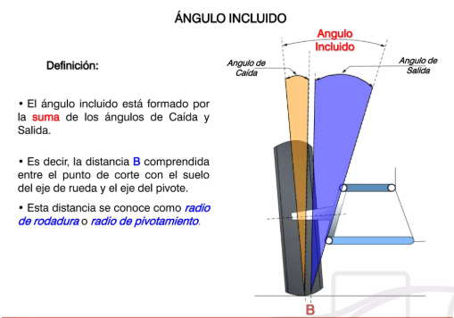
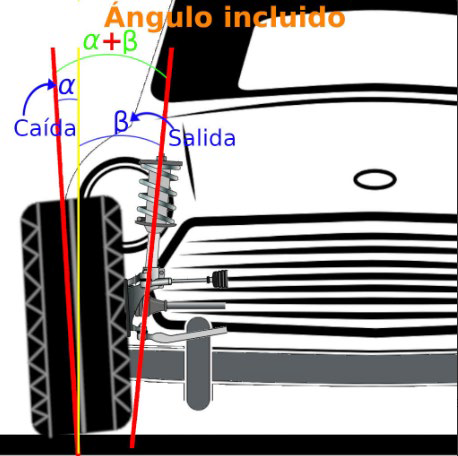

Ángulo incluido
El ángulo incluido (o ángulo total) es un parámetro de la geometría de dirección que se obtiene a partir de la relación entre dos ángulos fundamentales de la suspensión: la caída (camber) y la salida o inclinación del eje de pivote (kingpin o SAI). Se trata de un valor muy útil en el diagnóstico del sistema de dirección y suspensión.

¿Qué representa?
El ángulo incluido representa la suma geométrica de la inclinación de la rueda (camber) y la inclinación del eje de dirección (SAI o kingpin). En términos simples, es el ángulo total que se forma entre el eje de la rueda y el eje de giro de la dirección cuando se observa el conjunto desde la parte frontal del vehículo.
Este valor no se ajusta directamente en la mayoría de los vehículos, sino que se utiliza como un indicador de referencia para comprobar si los componentes de la suspensión y la dirección están en buen estado y correctamente alineados.
Función del ángulo incluido
El ángulo incluido sirve principalmente para:
- Diagnosticar daños estructurales en la suspensión o el chasis.
- Verificar si hay piezas dobladas o deformadas tras un golpe.
- Comprobar la coherencia entre la caída y la salida.
- Ayudar en la detección de problemas de alineación complejos.
Importancia en la geometría del vehículo
A diferencia de otros ángulos como la convergencia o la caída, el ángulo incluido no se ajusta de forma independiente. Sin embargo, es muy importante porque:
- Permite detectar si el sistema de dirección está simétrico en ambos lados.
- Ayuda a identificar diferencias entre la rueda izquierda y derecha.
- Sirve como referencia en diagnósticos avanzados de alineación.
Si el ángulo incluido difiere mucho entre las ruedas del mismo eje, suele indicar un problema mecánico o estructural.
Relación con la conducción
Aunque el conductor no percibe directamente este ángulo, influye de manera indirecta en el comportamiento del vehículo, ya que afecta a la forma en que la rueda contacta con el suelo junto con el resto de la geometría.
Un ángulo incluido correcto contribuye a:
- Una dirección más estable.
- Mejor comportamiento en línea recta.
- Menor desgaste de componentes.
- Mayor precisión en la conducción.
- Problemas por valores incorrectos.
Cuando el ángulo incluido no es simétrico o está fuera de los valores recomendados, pueden aparecer síntomas como:
- El vehículo tira hacia un lado.
- Desgaste irregular de los neumáticos.
- Volante descentrado.
- Inestabilidad en la dirección.
- Dificultad para mantener la trayectoria recta.
En estos casos, no suele ser el ángulo en sí el problema, sino una deformación en la suspensión, el mangueta o el chasis.
